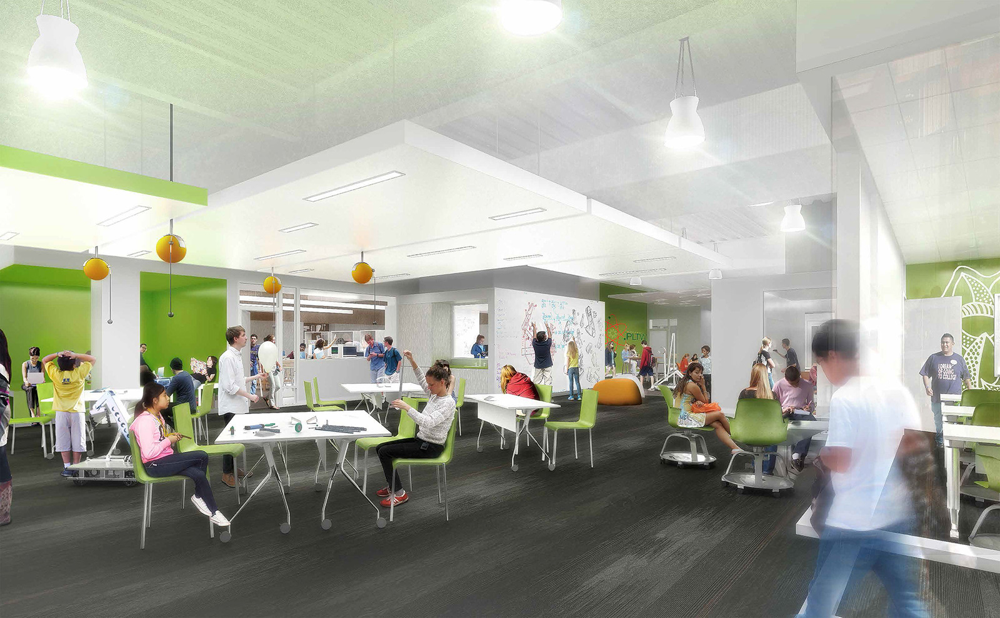
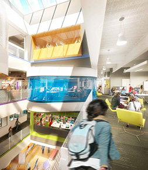
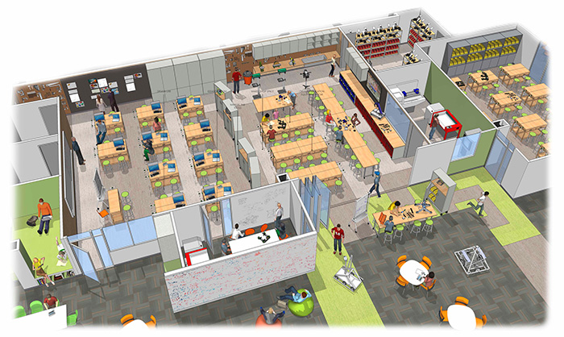

Gensler mockup of the interior of the new campus
For the first time in Da Vinci history all 3 high schools (Design, Communication, and Science) will be housed underneath the same roof.
Once the doors opens on August of 2017, 1400+ kids will be ushered into a brand new innovative and futuristic high school, located at 201 N. Douglas St., El Segundo, CA 90245, officially named Wiseburn High School. The new high school will span 4 stories and 210 thousand square feet. Da Vinci students will certainly be in for a "one of a kind experience."
Gensler's Los Angeles office who also is responsible for Denver's revamped airport and Topshop's first West Coast location , designed the new Da Vinci campus. Communication on Gensler's end was spearheaded by design director David Herjeczki, along with other designers who contributed to the design and engineering of the building.
Unlike most other high schools, Gensler personalized Wiseburn High School to fit a Da Vinci Schools program, instead of having Da Vinci Schools mold their program to fit a Gensler-designed building. Each of Da Vinci's three High schools will have their own floor which will have nearly every aspect customized from the walls to furniture.

Another Gensler Mockup of the Interior of the building
Once Da Vinci students enter Wiseburn High School for the first time in August of 2017, they will encounter an auditorium on the first floor, administrative spaces, and other recreational space before they reach the stairwell that connects students to their individual school. Da Vinci Science will occupy the second floor, Da Vinci Communications the 3rd, and Da Vinci Design will be on the top floor.
Construction Hiccups
Although the main building is on track to open on schedule, the gymnasium and Olympic Swimming Pool aren't scheduled to open until Spring 2018 due to the project going over the budget.
According to Wiseburn's Director of Facility Planning, Vince Madsen who has worked for the Wiseburn School District for 3 years and as a Director of Facility Planner for Los Angeles school districts for nearly 10 years ; Los Angeles' city-wide construction boom caused prices to go up on construction the school because of " an increased supply and demand."
"I don't know if you've been to downtown recently, but construction is going on everywhere," he told me as I grilled him on a variety of questions ranging from the project's budget to Da-Vinci's and Wiseburn's unique relationship.
"We Do Things Differently" We Partner with School Districts
While LAUSD, the second largest school district in the Nation
evaluates the possibility of becoming an all-charter school district Da Vinci is doing the opposite. Da Vinci's current relationship with Wiseburn mostly includes just being authorized to operate in Wiseburn territory and being Wiseburn's home school is set to grow significantly with the opening of Wiseburn High School.
With Wiseburn having more influence in Da Vinci's affairs students would be rightfully concerned that Da Vinci could be at risk of losing it's identity by this partnership.
Fortunately,Wiseburn and Da Vinci have had a great relationship with little if any counterproductive interference on Wiseburn's end.
"Unless we really start bombing something or really start losing it, I think they'll kinda let us do our thing," Kate Parsons said after asked about how Da Vinci's Identity would be effected. Nevertheless, Da Vinci's Identity has been safeguarded in a series of documents called the Magna Carta. This yet-to-be signed document includes passages such as
- Da Vinci and Wiseburn must share board members for equal representation
- The two boards must have biannual joint meetings
- maintains Da Vinci's lottery application process
and many more.
This document can be viewed here.
Wiseburn High School Will be Great for Students, Faculty, and the Wiseburn Community
Da Vinci students and faculty should look forward to having all schools on the campus for the first time. With all the students being on the same campus Da Vinci will be able to have more balanced sports teams and an increased turnout rate to all events. Students should also look forward to new sports such as baseball, softball, swimming, and water polo.
The only current downside to the new campus is that Communications, Science, and Design students will interact less because of seminars becoming school-specific and there being different lunch times due to the logistical nightmare of having to serve 1400 kids at once.
The building is stunningly beautiful on the inside and the outside. Classrooms will include amenities such as dropdown projectors, built in computer carts, and window views. Also on the outside of each classroom will be a quad area where students can sit and work outside of the classroom.

A View of a Concept Classroom by Gensler
Lastly, the building will be more earthquake resistant and sustainable than Dv's current campuses.
Communications and DVX continue to evolve
Next year, Communications Juniors and Seniors will be given more freedom of choice with their education via "Pathway Projects."
The pathway projects will range from Communications first official newspaper to 72 and Sunny projects to projects involving artificial intelligence. These pathway projects will give students the opportunity to learn about what they are interested in instead of the traditional way of learning what the teacher chooses to teach.
Also classes for Seniors and Juniors will not only become shorter, but math classes will be mixed. Upperclassmen will still take their grade specific classes such as College writing for 12th graders and biology for 11th graders, but their math classes will be mixed by topic instead of grade.
Da Vinci's college-ish program expands its focus. Besides helping students get into college, DVX will also explore how they can help Da Vinci's alumni in college, Kim Merritt who will soon have a PhD in organizational leadership said.
Da Vinci Lives Up To Its Name
No matter how uneasy students are about the move to the new campus they should know that everyone on Da Vinci's and Wiseburn's faculty are not only qualified for their positions, but also extremely passionate about teaching and the students whose lives they have a significant impact on.